Jiwoo Han
I am currently pursuing a dual major in Chemistry and Materials Science and Engineering at Yonsei University. This interdisciplinary combination has equipped me with a comprehensive understanding of both the molecular-level interactions that govern chemical behavior and the structural and functional design of advanced materials. My academic background has provided me with both theoretical insight and hands-on laboratory experience, allowing me to develop skills in synthesis, structural analysis, and performance evaluation of functional materials, particularly in the context of energy-related applications. As part of my chemistry curriculum, I have completed various laboratory courses that exposed me to a broad range of experimental techniques and analytical instruments. Through these courses, I became proficient in wet chemical synthesis, titration methods, and spectroscopic analysis. In particular, during my exchange studies at the University of California, Riverside in 2025, I had the opportunity to work with advanced materials characterization tools such as Scanning Electron Microscopy (SEM) and X-ray Diffraction (XRD). These tools were used in a semester-long team project in which we analyzed the structure of a commercially purchased aerogel from Amazon. We used SEM to observe surface morphology and pore distribution, and XRD to examine the degree of crystallinity and phase purity. By comparing our experimental data with reference standards, I learned how to interpret diffraction patterns and microscopic images to evaluate material structure. This hands-on project gave me a deeper appreciation for the nuances of data interpretation and strengthened my ability to connect microstructural information with macroscopic material properties.
Outside of academics, I actively engaged in student leadership through a committee under Yonsei University’s Office of International Affairs. As part of this organization, I helped design and coordinate programs for incoming exchange students, including cultural events, campus tours, and peer mentoring. This role demanded careful logistical planning, collaborative teamwork, and a high level of cultural sensitivity. It also allowed me to see how meaningful communication and inclusive environments can empower individuals from diverse backgrounds—something I believe is just as important in a research lab as it is in student affairs. In addition to my academic and organizational experiences, I have participated in both a university dance team and a Korean traditional music club. These activities fostered not only my creativity and discipline, but also my ability to work in synchronized teams toward a common goal. They taught me how to persist through repetition and how to find balance between precision and expression—skills that resonate strongly with experimental research.
Looking ahead, I am deeply motivated to pursue a research career in the field of secondary batteries, particularly focusing on the development and optimization of cathode and electrolyte materials for lithium-ion and solid-state systems. I am especially interested in how interfacial stability, ion transport mechanisms, and material degradation impact battery performance over time. My long-term goal is to contribute to the advancement of sustainable, high-efficiency energy storage solutions that will support the global shift toward electrification and renewable energy. With a strong foundation in both chemistry and materials science, and a passion for research that addresses real-world energy challenges, I aim to become a researcher who bridges disciplines and generates meaningful innovation.
Experience
Exchange Program
• Experienced academic and cultural life at a U.S. university
• Enrolled in a graduate-level course
Student Event Planner
• Planned and organized programs for exchange students
• Assisted with orientation sessions for incoming exchange students
• Served as an executive member and coordinated internal club events
Performance Club
• Participated in regular performances in front of large audiences
• Collaborated with members for ensemble rehearsals and stage coordination
Education
Yonsei University
Portfolio
 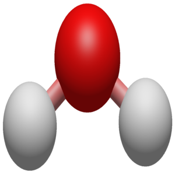
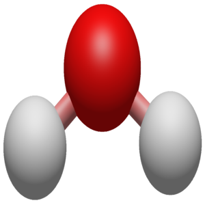
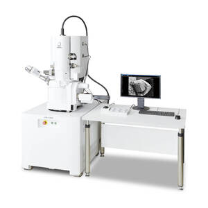
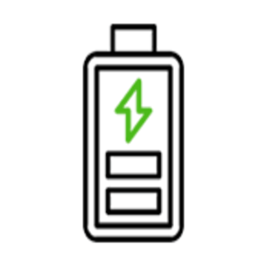
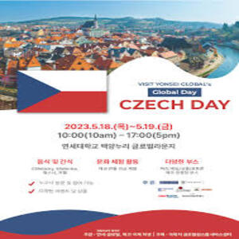
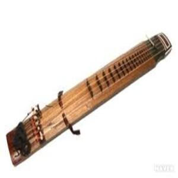
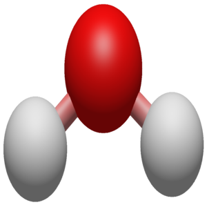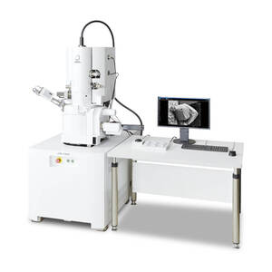 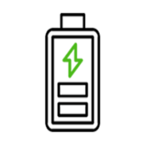
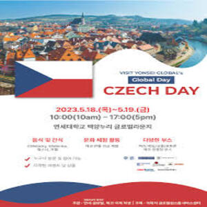 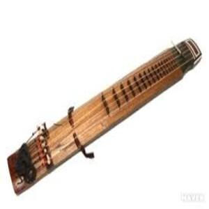